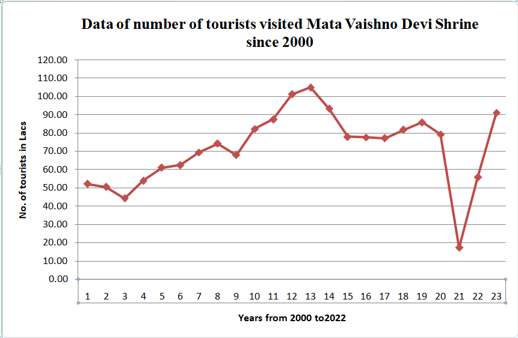

Jammu Economy
Jammu is a province of India, located in the country’s northern part, and a global tourist destination. In addition to traditional recreational tourism, a vast scope exists for adventure, pilgrimage, spiritual, and health tourism.
The agro-oriented economy of Jammu is based on horticulture, agriculture, tourism, floriculture, etc. Jammu has a variety of agro-climate conditions throughout the calendar year, which has high potential for an enormous assortment of flora and fauna. The lavender fields of Reasi District are an example of high scope in floriculture. The world-famous handicraft is another pillar of the Jammu and Kashmir economy.
The Jammu province is a major contributor to the economy in terms of spiritual tourism, as around one crore tourists visit the holy shrine of Shri Mata Vaishno Devi every year, as per the statistical data presented on the official website of the Shri Mata Vaishno Devi Shrine Board. Out of the total 1.62 lakh tourists who visited Jammu and Kashmir in 2022, 91.5 lakh visited Shri Mata Vaishno Devi Shrine, and 3.65 lakh visited Baba Amarnath Shrine, showing that spiritual tourism is the major contributor to the tourism economy sector of JK UT. The Jammu province is blessed with land rich in fertility nutrients for best-quality rice crops, which is another major contributor to the agro-economy of the UT. The rajmash crop from Doda-Bhaderwah, saffron from Kishtwar, rice and wheat from Jammu-Kathua, tourism in Udhampur, Reasi, Doda, Poonch, Rajouri, Kathua, etc. could be major contributors to the self-reliant Jammu province.
 Image courtesy of Mata Vaishno Devi Shrine Board